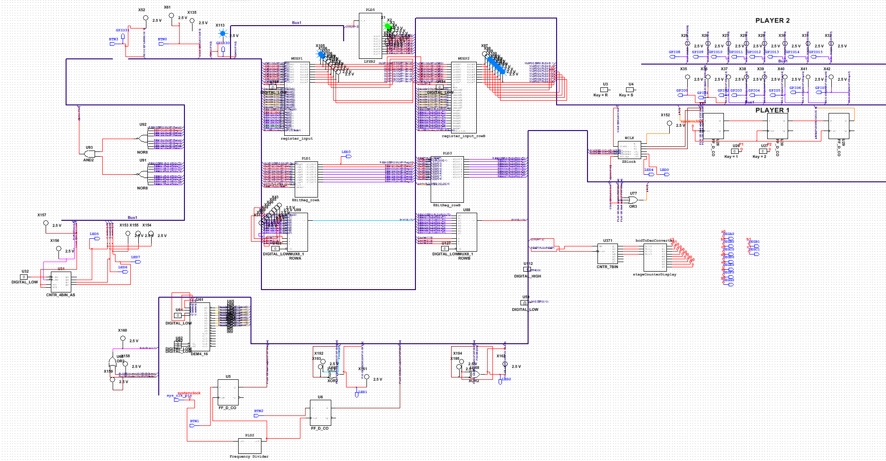
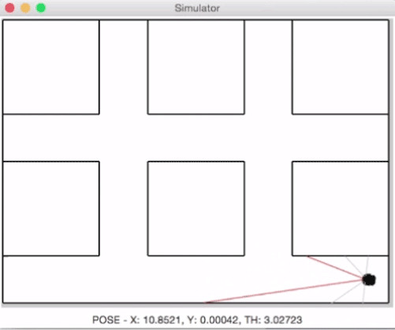

Table of Contents
1 University Projects
1.1 Brief
I joined Singapore University of Technology and Design in May 2013. Each term is roughly 4 months long. We have multiple projects per term and I am listing the ones that I enjoyed the most. As you will see, I omitted any projects from Term 1; I don't think those are very interesting.
1.2 Capstone (Term 7 - 8)
Interactive Animatronics Dragon
- Design an interactive dragon to gain public interest and social interaction
- The team consists of six members over 3 different pillars:
- Architecutre and Sustainable Design
- Engineering and Product Development
- Information Systems Technology and Design
For regular updates please follow our blog: http://imagine-sutd.tumblr.com/
1.3 Term 6
Online Bookstore
- Created an ordinary book keeping system for bookstore using Ruby on Rails.
- The queries were written natively in PostgreSQL for project.
- Bookstore suggested a sequence of the next five books when a particular book is purchased.
- Bookstore viewed the statistics of all purchases for a given month as chosen by user.
Link: https://github.com/remmihsorp/sample-ordinary-bookstore.git
Sequence Labeling System- Applied Hidden Markov Model theory to label sequence of words in an informal texts.
- Used Viterbi Algoritm to run HMM over large data sets.
- Achieved an accuracy of 56%.
1.4 Term 5
SumoPuff
- Built a concurrent multiplayer game using LibGDX.
- The game used Google Play Developer to find players.
- Our team designed the graphics and functionality of the sumowrestlers from scratch.
- The players who could tap the fastest and utilize powerups to throw the opponent of stage wins.
1.5 Term 4
TelePath
TravelKat
- Constructed an ALU using logic gates.
- Designed and built a prototype of an electronic hardware game using NI Multisim.
- Used the ALU along with other gates to design the multiplayer game.
- A sample circuit diagram is provided below.

- Created a travel application for Android Platform which gives a best route depending on user choice.
- The algorithm takes into account of the budget a user has and gives the best routes accordingly.
- The routes can suggest you to walk to destination, take a bus, or a cab.
- The team also implemented a location identifier (the framework was provided) based on pictures.
1.6 Term 3
Milk Delivery System using Amigobot
- Programmed an amigobot using Python to navigate a given maze for milk delivery.
- Performed several test simulation on different levels before attempting the real world maze.
- Debugged extensively during real world deployment as it was very different from test scenario.
- A simulation is provided below.

The actual maze looks like this: https://www.youtube.com/watch?v=GqJR4Rjiqpk
1.7 Term 2
Primary Energy @ Home
- Collaborated in a team of 5 to design a product which uses renewable energy (solar energy) to heat water by storing heat in concrete.
- Performed extensive research for finding out fresh new ideas for prototypes.
- Conducted surveys for customer feedback to improve or implement new ideas in the product.
- Developed several different prototypes and performed experiments to finalize the required traits.
- Finalized a working prototype which heats up water by 3-5 using heat stored from the concrete for 3-4 hours after sunset.
- Analyzed existing products and conducted surveys for a better design.
- Fabricated a new design for a clothes dryer working in a team of 5.
- Built a prototype of the product in one week; theSi product detected weather changes and automatically retrieved clothes from the balcony to keep them dry and vice-versa.
For more info: http://design.sutd.edu.sg/2013/class-projects/13f06-05/
PS: The site was made with limited time. Once I learn Jekyll, it will be updated to look nicer.